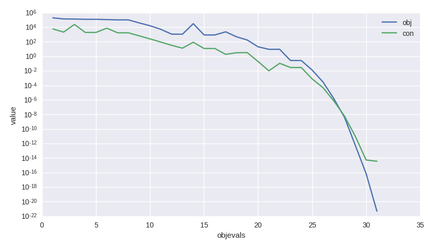

A first tutorial on the use of NLopt solvers#
In this tutorial we show the basic usage pattern of pygmo.nlopt. This user defined
algorithm (UDA) wraps the NLopt library making it easily accessible via the pygmo common
pygmo.algorithm interface. Let us see how this miracle occurs.
I have the gradient#
>>> import pygmo as pg
>>> uda = pg.nlopt("slsqp")
>>> algo = pg.algorithm(uda)
>>> print(algo)
Algorithm name: NLopt - slsqp: [deterministic]
C++ class name: ...
Thread safety: basic
Extra info:
NLopt version: ...
Solver: 'slsqp'
Last optimisation return code: NLOPT_SUCCESS (value = 1, Generic success return value)
Verbosity: 0
Individual selection policy: best
Individual replacement policy: best
Stopping criteria:
stopval: disabled
ftol_rel: disabled
ftol_abs: disabled
xtol_rel: 1e-08
xtol_abs: disabled
maxeval: disabled
maxtime: disabled
In a few lines we have constructed a pygmo.algorithm containing the "slsqp" solver from
NLopt. For a list of solvers availbale via the NLopt library check the docs of nlopt.
In this tutorial we will make use of "slsqp", a Sequential Quadratic Programming algorithm suited for
generic Non Linear Programming problems (i.e. non linearly constrained single objective problems).
All the stopping criteria used by the NLopt library are available via dedicated attributes, so that we may, for
example, set the ftol_rel by writing:
>>> algo.extract(pg.nlopt).ftol_rel = 1e-8
Let us algo activate some verbosity as to store a log and have a screen output:
>>> algo.set_verbosity(1)
We now need a problem to solve. Let us start with one of the UDPs provided in pygmo. The
pygmo.luksan_vlcek1 problem is a classic, scalable, equality-constrained problem. It
also has its gradient implemented so that we do not have to worry about that for the moment.
>>> udp = pg.luksan_vlcek1(dim = 20)
>>> prob = pg.problem(udp)
>>> pop = pg.population(prob, size = 1)
>>> pop.problem.c_tol = [1e-8] * prob.get_nc()
The lines above can be shortened and are equivalent to:
>>> pop = pg.population(pg.luksan_vlcek1(dim = 20), size = 1)
>>> pop.problem.c_tol = [1e-8] * pop.problem.get_nc()
We now solve this problem by writing:
>>> pop = algo.evolve(pop)
objevals: objval: violated: viol. norm:
1 250153 18 2619.51 i
2 132280 18 931.767 i
3 26355.2 18 357.548 i
4 14509 18 140.055 i
5 77119 18 378.603 i
6 9104.25 18 116.19 i
7 9104.25 18 116.19 i
8 2219.94 18 42.8747 i
9 947.637 18 16.7015 i
10 423.519 18 7.73746 i
11 82.8658 18 1.39111 i
12 34.2733 15 0.227267 i
13 11.9797 11 0.0309227 i
14 42.7256 7 0.27342 i
15 1.66949 11 0.042859 i
16 1.66949 11 0.042859 i
17 0.171358 7 0.00425765 i
18 0.00186583 5 0.000560166 i
19 1.89265e-06 3 4.14711e-06 i
20 1.28773e-09 0 0
21 7.45125e-14 0 0
22 3.61388e-18 0 0
23 1.16145e-23 0 0
Optimisation return status: NLOPT_XTOL_REACHED (value = 4, Optimization stopped because xtol_rel or xtol_abs was reached)
As usual we can access the values in the log to analyze the algorithm performance and, for example, produce a plot such as that shown here.
>>> log = algo.extract(pg.nlopt).get_log()
>>> from matplotlib import pyplot as plt
>>> plt.semilogy([line[0] for line in log], [line[1] for line in log], label = "obj")
>>> plt.semilogy([line[0] for line in log], [line[3] for line in log], label = "con")
>>> plt.xlabel("objevals")
>>> plt.ylabel("value")
>>> plt.show()


I do not have the gradient#
The example above made use of an UDP, pygmo.luksan_vlcek1, that provides also explicit gradients for both the objective and the constraints.
In many cases this is not the case for UDPs the user may code in a hurry or that are just too complex to allow explicit gradient computations. Let’s see
an example:
>>> class my_udp:
... def fitness(self, x):
... return (np.sin(x[0]+x[1]-x[2]), x[0] + np.cos(x[2]*x[1]), x[2])
... def get_bounds(self):
... return ([-1,-1,-1],[1,1,1])
... def get_nec(self):
... return 1
... def get_nic(self):
... return 1
>>> import numpy as np
>>> pop = pg.population(prob = my_udp(), size = 1)
>>> pop = algo.evolve(pop)
Traceback (most recent call last):
File "/home/dario/miniconda3/envs/pagmo/lib/python3.6/doctest.py", line 1330, in __run
compileflags, 1), test.globs)
File "<doctest default[3]>", line 1, in <module>
pop = algo.evolve(pop)
ValueError:
function: operator()
where: /home/user/Documents/pagmo2/include/pagmo/algorithms/nlopt.hpp, 259
what: during an optimization with the NLopt algorithm 'slsqp' a fitness gradient was requested, but the optimisation problem '<class 'my_udp'>' does not provide it
Bummer! How can I possibly provide a gradient for such a difficult expression of the fitness? Clearly making the derivatives here is not an option :)
Fortunately pygmo provides some utilities to perform numerical differentiation. In particular pygmo.estimate_gradient() and pygmo.estimate_gradient_h()
can be used quite straight forwardly. The difference between the two is in the finite difference formula used to estimate numerically the gradient, the little _h
standing for high-fidelity (a formula accurate to the sixth order is used: see the docs). So all we need to do, then, is to provide the gradients in our UDP:
>>> class my_udp:
... def fitness(self, x):
... return (np.sin(x[0]+x[1]-x[2]), x[0] + np.cos(x[2]*x[1]), x[2])
... def get_bounds(self):
... return ([-1,-1,-1],[1,1,1])
... def get_nec(self):
... return 1
... def get_nic(self):
... return 1
... def gradient(self, x):
... return pg.estimate_gradient_h(lambda x: self.fitness(x), x)
>>> pop = pg.population(prob = my_udp(), size = 1)
>>> pop = algo.evolve(pop)
fevals: fitness: violated: viol. norm:
1 0.694978 2 1.92759 i
2 -0.97723 1 9.87066e-05 i
3 -0.999189 1 0.00295056 i
4 -1 1 3.2815e-05 i
5 -1 1 1.11149e-08 i
6 -1 1 8.12683e-14 i
7 -1 0 0
Let’s assess the cost of this optimization in terms of calls to the various functions:
>>> pop.problem.get_fevals()
23
>>> pop.problem.get_gevals()
21
The pygmo.problem.fitness() was called a total of 23 times, while pygmo.problem.gradient() a total of 21 times. Since we are using
pygmo.estimate_gradient_h() to provide the gradient numerically, each call to the pygmo.problem.gradient()
causes 6 evaluations of my_udp.fitness(). So, at the end a total of 23 + 6 * 21 calls to my_udp.fitness() have been made.